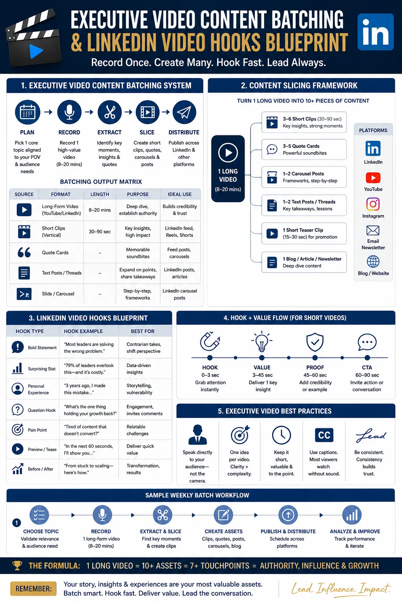
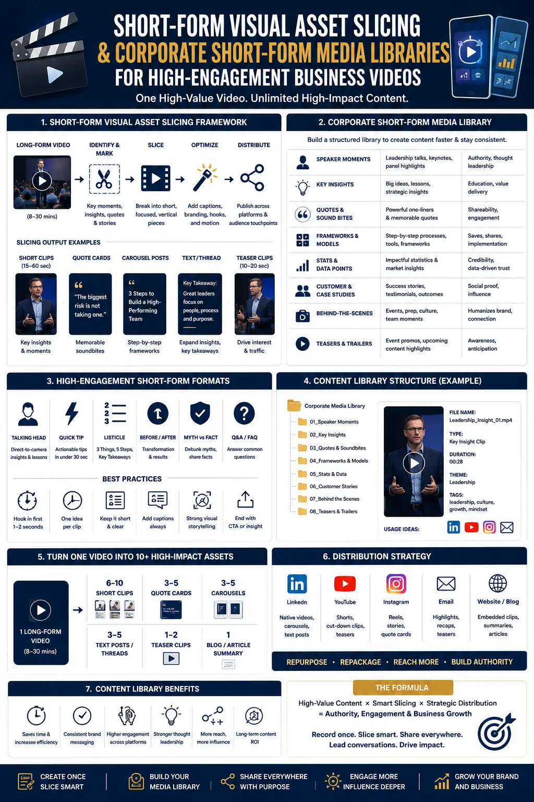

The Short-Form Visual Slicing Playbook for Executive Thought Leaders
Why Executive Content Strategies Fail Without a Production System
Every executive, founder, and C-suite leader building a personal brand in 2026 faces the same structural challenge: the platforms that matter most for professional authority — LinkedIn, Instagram, YouTube — demand consistent, high-quality short-form video content, but the operational reality of executive schedules makes daily content production impossible. The executive who records a single video once a week is competing against creators who publish three to five times per day with platform-optimised content engineered for engagement. Without a systematic production methodology, even the most compelling executive voices get buried beneath the algorithmic noise.
This is why Social Media Content Creation for executives requires an entirely different approach than the creator model or the traditional corporate video model. It demands a structured playbook — a repeatable system that transforms concentrated recording sessions into weeks of platform-ready content through disciplined Short-Form Visual Asset Slicing. This playbook is not about working harder or recording more frequently. It is about building a production architecture that maximises every minute of an executive's camera time and distributes the output systematically across every platform that matters.
The approach is rooted in Creator-Led B2B Video Production — applying the visual energy, pacing, and platform-native aesthetics of successful social media creators to executive communication. The result is professional influencer-style corporate films that combine the substance and authority of executive thought leadership with the engagement mechanics that social media algorithms and audiences reward. This is the complete playbook for building that system.
The Foundation: Executive Video Content Batching as a Production Philosophy
The entire playbook begins with a single operational principle: executive video content batching. Rather than recording content in scattered, ad-hoc sessions throughout the month, the executive dedicates a single concentrated production block — typically four to eight hours — during which all content for the upcoming 30 to 60 days is recorded in a structured, pre-planned sequence. This batching approach eliminates the per-session overhead of equipment setup, wardrobe preparation, lighting configuration, and mental context-switching that makes individual recording sessions so inefficient.
Effective executive video content batching requires rigorous pre-production planning. Before the recording day, the production team develops a complete content architecture — a structured topic list mapping every segment to a specific platform, format, publishing date, and strategic objective. Each topic is briefed with talking points, a recommended hook structure, and key phrases that align with the executive's authority-building goals. The recording day itself is then pure execution: the executive arrives to a pre-configured set, reviews the first brief, records the segment, and moves immediately to the next topic. No time is wasted on decisions that should have been made in pre-production.
This batching methodology is the operational backbone of building corporate short-form media libraries — structured content inventories that sustain consistent publishing without requiring the executive to touch a camera between sessions. A single well-executed batching session with a prepared executive can yield 12 to 20 distinct content segments, which through systematic Short-Form Visual Asset Slicing in post-production can produce 80 to 150 individual platform-ready assets.
Engineering Attention: The LinkedIn Video Hooks Blueprint
The most technically brilliant content is worthless if nobody watches past the first two seconds. On LinkedIn — the primary platform for B2B executive authority — the average user scrolls past content in under 1.5 seconds if the opening fails to command attention. This is why every serious executive content strategy requires a LinkedIn video hooks blueprint — a systematic framework of proven opening patterns that stop the scroll and compel the viewer to engage:
- The counterintuitive statement hook. Open with a statement that challenges the viewer's assumptions about their industry or profession. This pattern activates curiosity and creates cognitive tension that demands resolution — forcing the viewer to keep watching. Example: "Everything your marketing team believes about LinkedIn engagement is fundamentally wrong."
- The data-driven authority hook. Lead with a specific, surprising statistic that establishes the executive's command of their domain while presenting information the viewer has not encountered elsewhere. The specificity of real data signals credibility and differentiates the content from generic opinion.
- The question-challenge hook. Pose a direct question that mirrors a problem the viewer is actively experiencing. This pattern creates immediate personal relevance — the viewer recognises their own situation and watches to discover the executive's solution or framework.
- The narrative-moment hook. Open mid-story with a compelling narrative moment — a decision, a failure, a turning point — that drops the viewer into the middle of a story they feel compelled to see resolved. The LinkedIn video hooks blueprint prioritises this pattern for personal brand storytelling segments.
Every piece of content produced through high-volume content production sprints should be built around one of these hook categories. The hook is not an afterthought added in editing — it is the structural foundation around which the entire content segment is designed, recorded, and sliced.
Concentrated Production
Executive video content batching consolidates an entire month's recording into a single focused session, eliminating the scheduling overhead and context-switching costs that make ad-hoc content production unsustainable for busy executives.
Algorithmic Optimisation
A structured LinkedIn video hooks blueprint ensures every piece of content is engineered for maximum initial attention capture — the single most important factor in LinkedIn's algorithm for distributing executive content to wider professional audiences.
Asset Multiplication
Short-Form Visual Asset Slicing transforms each long-form recorded segment into 6 to 10 individual platform-ready assets — multiplying the output of every recording session through systematic post-production extraction and platform-specific formatting.
Creator-Grade Production
Creator-Led B2B Video Production applies the visual dynamism, pacing, and engagement techniques of top social media creators to executive content — producing professional influencer-style corporate films that earn creator-level engagement with executive-grade substance.

High-Volume Content Production Sprints: The Recording Day Framework
The recording day is the engine of the entire playbook. High-volume content production sprints are structured production sessions designed to capture the maximum number of publishable content segments within a concentrated time window. Every element of the day is pre-planned and pre-configured to ensure that the executive's time on camera is spent exclusively on delivering content — not waiting for equipment adjustments, reviewing scripts, or making production decisions:
- Pre-production setup (60-90 minutes before the executive arrives). The production crew configures all lighting, audio, camera positions, teleprompter systems, and set elements before the executive enters the studio. All visual configurations for the day — background variations, lighting moods, camera angles — are pre-tested and ready for rapid switching. This advance preparation is essential for producing high-engagement business videos at the pace the playbook demands.
- High-energy recording block (first 2-3 hours). Begin with the content segments that require the most energy, conviction, and dynamic delivery — opinion pieces, provocative industry commentary, and high-stakes framework explanations. The executive's freshest energy produces the most compelling high-engagement business videos during this block.
- Visual rotation and reset (30 minutes). After the first block, execute a major visual rotation — wardrobe change, background swap, lighting mood shift — creating visual variety that makes content published across the month appear as though it was recorded across multiple sessions rather than a single day. This visual diversity is critical for sustaining audience interest across the corporate short-form media libraries built from the session.
- Conversational recording block (final 2-3 hours). Transition to formats that accommodate the executive's natural energy reduction — conversational insights, reflective narratives, educational explanations, and Q&A responses. These formats produce excellent Social Media Content Creation assets that perform particularly well on LinkedIn and YouTube.
The Post-Production Slicing Workflow: From Raw Footage to Media Library
Post-production is where the playbook delivers its highest leverage. Through systematic Short-Form Visual Asset Slicing, every recorded segment is deconstructed, re-engineered, and rebuilt into multiple standalone content pieces — each optimised for a specific platform, format, and audience behaviour. This is the process of building corporate short-form media libraries that sustain consistent publishing for 30 to 60 days from a single recording session:
Content Extraction and Hook Engineering
- Review each recorded segment frame by frame to identify every standalone moment — a compelling insight, a memorable framework, a counterintuitive opinion, a quotable statement — that functions as independent Social Media Content Creation content.
- Apply the LinkedIn video hooks blueprint to engineer the opening of every extracted clip — restructuring the first three seconds to maximise scroll-stopping impact on each target platform.
- Extract 15-second to 90-second clips from each segment, adding clean endings with calls-to-action that drive profile visits, follows, and engagement signals.
- Create still-frame quote graphics, audiogram clips, and text-overlay carousels from the most quotable moments for supplementary content formats across high-volume content production sprints output.
Platform-Specific Formatting
- Export vertical 9:16 versions with embedded captions, dynamic text overlays, and kinetic typography for Instagram Reels, YouTube Shorts, and TikTok — formatted as professional influencer-style corporate films with creator-grade visual energy.
- Export horizontal 16:9 versions with professional lower thirds, brand elements, and clean audio mastering for LinkedIn video posts, YouTube standard uploads, and website embedding through Creator-Led B2B Video Production standards.
- Export square 1:1 versions with bold caption overlays and attention-grabbing visual framing for LinkedIn feed posts, Facebook posts, and paid ad creative testing.
- Generate platform-native thumbnails, preview graphics, and optimised caption text for each piece — ensuring every asset in the corporate short-form media libraries is fully ready for one-click publishing.
Library Organisation and Distribution Scheduling
- Organise all finished assets into a structured corporate short-form media libraries system with consistent naming conventions — date, platform, topic, content category, hook type, and version number — enabling rapid retrieval and repurposing.
- Map each asset to its assigned position in the editorial calendar built during the pre-production phase of the executive video content batching workflow, and schedule it through the brand's social media management platform.
- Archive all raw footage, project files, and alternate cuts for future re-editing, seasonal repurposing, compilation into longer-form content, and paid advertising creative rotation.
- Execute quality assurance across all scheduled posts — verifying captions, hashtags, posting times, platform formatting, aspect ratios, and brand consistency before publishing begins.

Creator-Led B2B Video Production: The Visual Language That Earns Engagement
The visual execution of executive content is where most corporate video strategies fail. Traditional corporate video — static wide shots, flat lighting, monotone pacing — communicates professionalism but fails to earn engagement in a social media environment where content competes against dynamic, visually energetic creator content. Creator-Led B2B Video Production solves this by applying the visual language of successful social media creators to executive content production:
- Dynamic camera movement and multi-angle coverage. Rather than locking a single camera on a static wide shot, Creator-Led B2B Video Production employs multiple camera angles, subtle camera movements, and dynamic framing changes that create visual energy and maintain viewer attention throughout the piece. This visual dynamism is what distinguishes high-engagement business videos from forgettable corporate content.
- Platform-native editing pacing and visual emphasis. Jump cuts, text overlays, zoom-punch effects, split-screen comparisons, and kinetic typography are integrated into the editing workflow to match the pacing expectations of social media audiences. These are the elements that transform executive substance into professional influencer-style corporate films that earn engagement rates comparable to top creator content.
- Strategic B-roll and visual storytelling layers. Rather than relying exclusively on talking-head footage, the production workflow incorporates strategic B-roll, animated graphics, data visualisations, and contextual imagery that reinforces the executive's message while providing visual variety that sustains attention across longer segments.
- Mobile-first composition and sound design. Every piece is composed, framed, and mixed for consumption on mobile devices in sound-off environments — with embedded captions, high-contrast text overlays, and visual storytelling that communicates the core message even without audio. This mobile-first approach is fundamental to producing high-engagement business videos that perform in real-world viewing conditions.
Building the Sustainable Content Engine
The ultimate objective of this playbook is not a single successful content sprint — it is the creation of a sustainable, repeatable content production engine that positions the executive as the definitive authority in their industry. Through monthly executive video content batching sessions, systematic Short-Form Visual Asset Slicing, and a disciplined LinkedIn video hooks blueprint, the executive maintains a daily multi-platform publishing presence that compounds authority over months and years.
The compounding effect is critical. An executive who publishes daily across LinkedIn, Instagram, and YouTube for 12 consecutive months — powered by monthly high-volume content production sprints — builds an audience, an authority position, and an inbound lead generation engine that no amount of sporadic content creation can match. The playbook transforms content from a discretionary marketing activity into a systematic business development infrastructure.
The economics reinforce the strategy. Building corporate short-form media libraries through batch production reduces the per-unit cost of professional content by 70 to 85 percent compared to producing each piece individually. When Creator-Led B2B Video Production infrastructure — equipment, crew, lighting, set — is shared across 80 to 150 content pieces rather than dedicated to a single asset, the cost efficiency makes professional-grade Social Media Content Creation accessible to executives at every scale.
Conclusion
The short-form visual slicing playbook for executive thought leaders is a complete production system — from pre-production planning and executive video content batching through structured high-volume content production sprints to systematic Short-Form Visual Asset Slicing and library-building workflows. It produces high-engagement business videos through Creator-Led B2B Video Production techniques, engineered for algorithmic performance through a disciplined LinkedIn video hooks blueprint, and packaged as professional influencer-style corporate films that build lasting executive authority.
At The PhD Ads, we execute this complete playbook for founders, executives, and professional service providers across India — managing every stage from content strategy and executive video content batching through Creator-Led B2B Video Production to final asset delivery. Our production workflow is built for Social Media Content Creation at scale, building professional corporate short-form media libraries that power consistent, authority-building content through high-volume content production sprints and professional influencer-style corporate films.
Key Topics
Ready to Build a Short-Form Content Engine That Positions You as the Authority in Your Industry?
At The PhD Ads in Madurai, we plan, record, slice, and deliver a complete library of high-engagement business videos from a single structured production session — giving founders and executives a multi-platform content engine powered by Short-Form Visual Asset Slicing, Creator-Led B2B Video Production, and executive video content batching.
Email: team@e2o.in